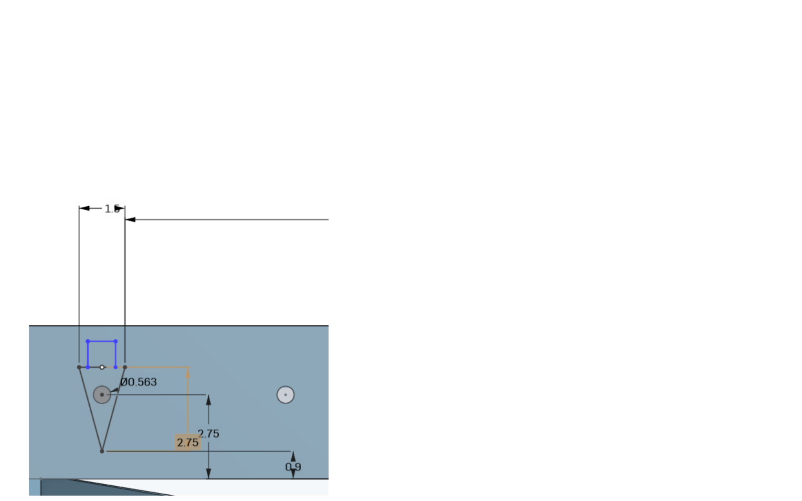

零組件尺寸分析
手足球系統的零組件尺寸分析 (可行性分析)
1.檯桌尺寸 (長:56 寬:30 高:5)
2.橫桿插入孔尺寸(直徑:0.563 距底部:2.75 孔間距:6)
3.球門尺寸(寬:8.375 長:3 距底部:0.8 )

4.橫桿尺寸(長:70 直徑:0.563)
*球桿直徑與桌檯孔洞呈鬆配合
5.球員尺寸(長:1.5 寬:1 高:3 圓孔:0.563 距底部:0.9)
*球員孔洞需與衡感直徑呈緊配合，必須使球員能隨橫桿轉動

6.球尺寸(直徑:0.15)
*球的直徑要大於球員距底板的距離，才不會發生卡球等問題
簡介 << Previous